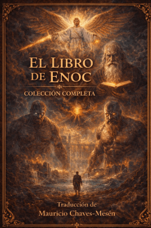
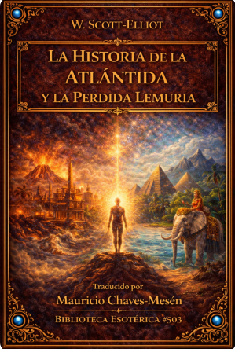
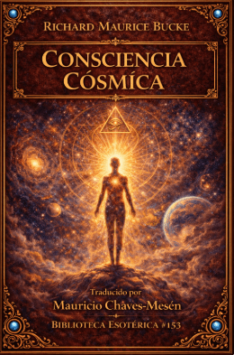

El Libro de Enoc
Texto sagrado del siglo III a.C. atribuido al bisabuelo de Noé. Narra la caída de los Vigilantes —ángeles que tomaron mujeres humanas y transmitieron conocimientos prohibidos—, el nacimiento de los Nefilim, y las visiones apocalípticas de Enoc. Fundamento de la angelología occidental y fuente oculta de los tres grandes monoteísmos.

Atlántida: El Mundo Antediluviano
El libro que resucitó el mito de la Atlántida en el siglo XIX. Donnelly demuestra con evidencia geológica, mitológica y lingüística que la Atlántida fue una civilización real que dio origen a todas las grandes culturas antiguas. Una obra que cambió para siempre el debate sobre los orígenes de la humanidad.

La Historia de la Atlántida y la Perdida Lemuria
Visión teosófica de los dos continentes perdidos. Scott Ellis rastrea las huellas de la Atlántida y Lemuria en las tradiciones esotéricas, los relatos de diluvios universales y los textos sagrados de civilizaciones separadas por océanos, hallando en todos ellos el mismo recuerdo de un mundo anterior al nuestro.
Las Sociedades Secretas de Todas las Edades y Países
La enciclopedia definitiva del siglo XIX sobre fraternidades ocultas. Heckethorn documenta cientos de sociedades secretas a través de la historia: escuelas de misterios egipcias, templarios, rosacruces, iluminati, masones y decenas más. Una obra monumental sobre el poder que siempre actuó en las sombras.

Consciencia Cósmica
El psiquiatra Richard Maurice Bucke describe la «consciencia cósmica», un estadio evolutivo superior de la mente humana. Analiza a Buda, Cristo, San Pablo, Dante, Blake y Whitman como portadores de esta iluminación espontánea, argumentando que es el siguiente paso en la evolución de la especie.